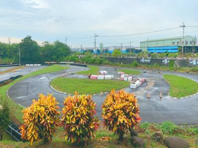
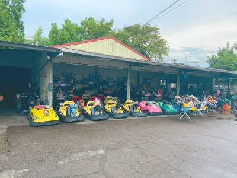
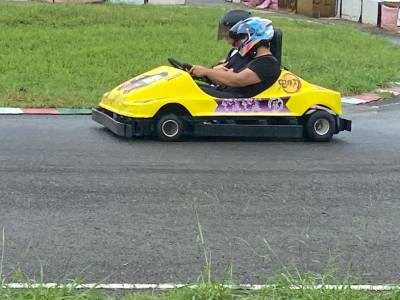
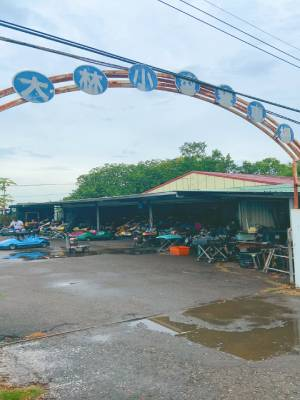

大林小型賽車場是專門開卡丁車的地方，有開放給一般民眾體驗卡丁車，也可以舉辦卡丁車比賽。
收費標準是:
單人座卡丁車，10分鐘台幣200元；
雙人座的話，10分鐘台幣300元。
如果有需要比賽車的話現場請教老闆喔！

這對於有汽車駕照的人，非常簡單喔，可以先適應場地再慢慢加速，如果沒駕照的話，也沒關係，操作簡易上手，而且也有服務人員在旁指導，所以不用太過擔心，慢慢開就好。
整體體驗下來，本組認為非常有趣且新奇，如果有機會的話，可以來試著體驗看看當老司機的感覺喔！也許你會愛上這種競技感！（° ∀ °）∈♥♥


★★★★★